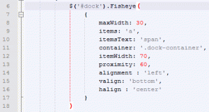

XSLT'de gibi boşluk karakteri verdiğimizde hata veriyor. Bunun bir
çözümü olmalı diye bir çok kere aradım buldum, sonra yine lazım oldu
yine aradım buldum ve en iyisi buraya yazmak diye düşündüm. [sourcecode language='xslt']
Hacklendik
Bu gün siteme girmeye çalışan Firefox ve Google üzerinden girmeye çalışanların karşılaştığı bir sorun sitem zararlı içerik olduğu için engellenmiş. Aslında tüm arama sitelerinden gelen yönlendirmeler de aynı sorun varmış. En sonunda anladım. Uzun aramalar sonunda http://wordpress.org/support/topic/217700 Bu linkdeki bilgiler doğrultusunda htcaacces içine girilen yönlendirme ...
devamını okuCSS ile Resim Haritaları(imagemap) yapmak
Ben ilk defa Flickr'da(bir örnek verelim. Dexter HTML kesiyormuş. :) gördüğüm bu metodu çok ilginç bulmuştum. Gerçekten kullanıcıya yardımcı olan bir uygulama, görünümü hoş ve işlevsel. İlk gördüğümde bu işin javascript yardımı ile yapıldığını düşünmüştüm ki araştırdığım da gördüm ki javascript yardımı ile yapanlar var, ama sadece css ile ...
devamını okuCSS ile Basit Şekilde Fare Üzerine Gelince(Rollover) Resim Değişimi Yapmak
Daha önce bu konuya Resimli Menüler kısmında anlatmıştım, ama orada yapı daha karışık olduğu için anlaşılması ve basit uygulamalara uyarlanması konusunda sıkıntılar oluyordu. Bu işi daha basit bir örnek yardımı ile yapıp daha anlaşılır yapmak için beraber bir örnek yapalım.
Tek resimde işi halletmemiz, resmin sayfa yüklenmesinden önce yüklenmesi sebebiyle ...
devamını okuCSS ile Yüzde Çubuğu Hazırlama
Yüzde çubuğuna ben anket yaparken ihtiyaç duydum. CSS ile yüzde çubuğu yapmak bize çok büyük kolaylık sağlıyor. Diğer yöntemlere göre daha esnek ve kolay bir uygulamaya sahiptir CSS ile yüzde çubuğu hazırlamak.
CSS ile yüzde çubuğu yapmanın bir kaç yöntemi var, ben kendimce en uygun gördüğümü anlatacağım.
Bu yöntemin uygulaması ...
devamını okuEn çok kullandığım CSS Hileleri(Hack)
Yaklaşık 3-4 senedir css ile web sayfası kodluyorum. CSS ile web sayfası kodlarken en çok sorun çıkaran konulardan biri farklı tarayıcılar için kod yazmaktır. CSS hileleri ile geçiştirdiğimiz bu farklı tarayıcılara göre kod yazma işi bize aslında CSS ile sayfa kodlama imkanı sunması bakımından önemlidir. Eğer CSS hileleri olması idi ...
devamını okuFireBug İpucu : FireBug'ın Yetenekleri
FireBug ile ilgili bir makale yazacağım ama bugün internette gezerken bir makaleye(50’den fazla doku kaynağı ile ilgili olan) bakıyordum birden aklıma yau benim sitenin ardalanına bunlardan hangisi uygun kaçar diye düşünmeye başladım. Sonra düşünmekten daha kolay bir yolunu buldum.
Aslında bir yazı olacak bir konu değil ama FireBug ...
devamını okuFirefox 3.1 Yenilikleri
Firefox 3.1 Beta1 çıktı. Aslında sadece bir haber değeri taşıyan bir bilgi, ancak Firefox 3.1 ile birlikte bir çok sevindirici gelişmeler getirdiği için dikkate değer bir yenileme. Bir ara sürüm değilde sanki yeni bir sürüm gibi. Yeni özelliklere bir göz atalım.
Geolocation
Geode internet tarayıcıları için yeni kavram ...
devamını okuSitemi temizleme ve hızlandırma çalışmalarım
Siteyi yeniledikten sonra daha önce eğilmediğim bazı konulara eğilmeye başladım. Siteyi daha hızlı hale nasıl getirebilirim diye araştırdım. Tam olarak bir karar veremesem de cach ile ilgili bir eklenti kurmayı düşünüyordum. Muhammet Sevim’in önerisi üzerine wp-Cache eklentisini kurdum. Ayrıca eklentileri kurunca veritabanına bir sürü tablo atıyor Wordpress, bunun yanında ...
devamını okuJavascript'te Parantez Takibi
Javascript ve jquery ile program yazarken en çok parantezleri nerede açıp kapadığımız önem kazanıyor. Çoğu zaman parantez takibi yapmak zorunda kalıyoruz.
[
 ][]
][]Dreamweaver’ın “Balancing Braces” özelliği sayesinde parantez takibi kolaylaşıyor. Fonksiyonun nereden başlayıp nerede bittiğini görmek gerekiyor. Bu özellik bize parantez takibi sağlıyor.
[][]
Güzel bir özellik olsa da NotePad ++’ ın ...
devamını oku